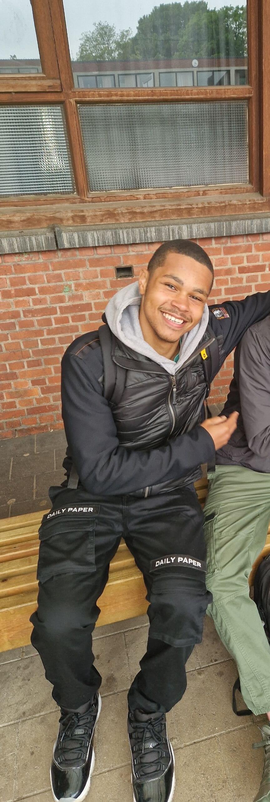
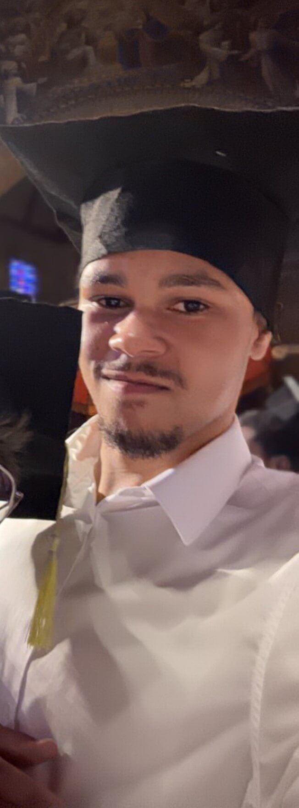

Ik ben Zendé Thys, 19 jaar oud en woon te Turnhout. Ik studeer Graduaat Programmeren aan de Thomas More in Geel. Hiervoor heb ik elektrische installaties gestudeerd aan de PT2O te Turnhout. Ik begin me laatste tijd meer te verdiepen in technologie, de laatste tijd ben ik ook bezig met het verbteren van mijn vaardigheden in webontwikkeling en programmeren. In me vrije tijd ben ik actief bezig met kickboksen, en vecht ook op amateurniveau. Daarnaast doe ik ook aan fitness, wat me ook helpt om fit te blijven en mijn discipline te versterken. Buiten dit alles ben ik ook studentmanager bij Mcdonalds Turnhout.
Ik beschouw mezelf als een leergierige en ambitieuze jongeman. Ik streef er altijd naar om nieuwe vaardigheden te ontwikkelen en mijn kennis uit te breiden. Mijn doel is om een succesvolle carrière op te bouwen in de IT-Sector, waar ik mijn vaardigheden kan toepassen en bijdragen aan vernieuwde projecten. Ik kijk ernaar uit om meer te leren en mezelf te blijven ontwikkelen en verbeteren.
 